A little boy drew a bookstore. His mother built it.
"Every bookstore in Chennai.
None felt like enough."
"If the bookstore we imagine doesn't exist yet then let's build it."
The Reading Elf was born from a tender moment a mother searching for magic for her little boy. We spent afternoons wandering bookshops, but he always imagined somewhere more alive. A place where children could giggle, wander, sit on the floor, and simply be themselves between pages.
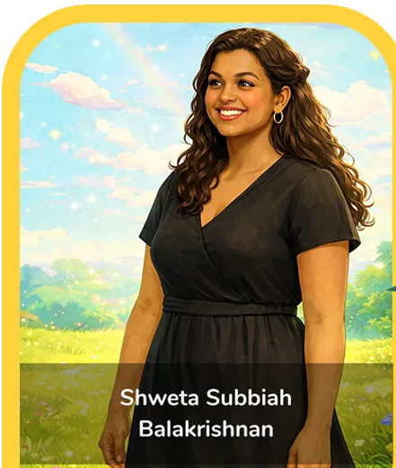
Shweta's Picks
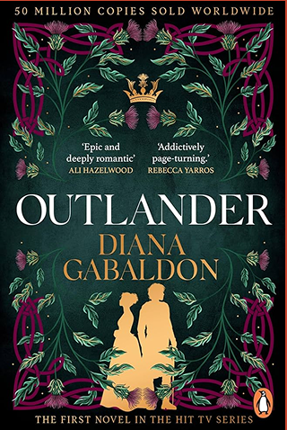
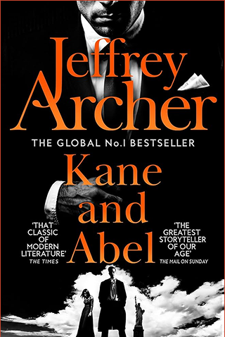
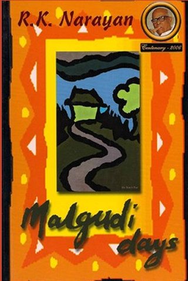
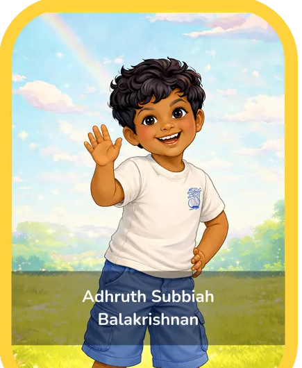
The Reading Elf began with him.
Chief Book Explorer
At 9, his imagination, love for stories and endless curiosity still find their way into the store. He drew the mushroom house that became our identity. Today, he is still part of the store, helping kids discover books he loves and sharing his favourites with fellow young readers. Look out for his picks around the store.
Adhruth's Picks
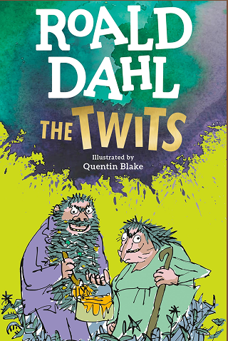
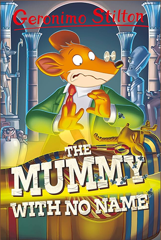
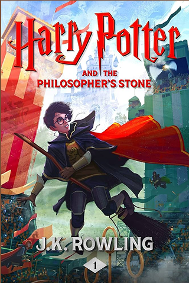
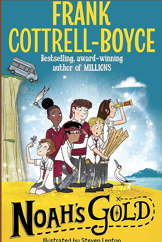
The Story Scout
Curious. Avid. Always Reading.
At 15, Sunaina brings her own perspective to the shelves - discovering new stories, exploring books, and finding the ones worth talking about. She loves helping around The Reading Elf, sharing her latest reads, and recommending stories she thinks other young readers will love.
Her rule? If a book is worth reading, it's worth recommending.
Look out for Sunaina's Picks around the store.
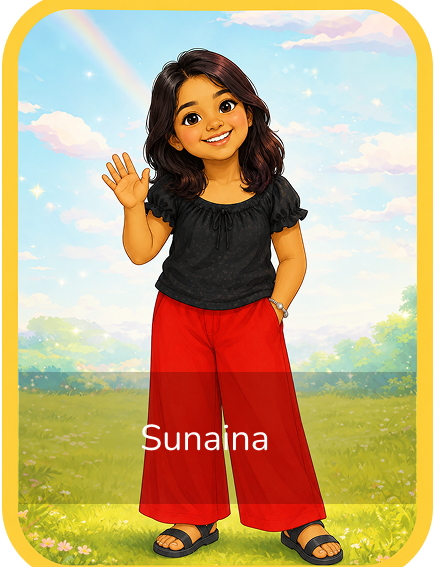
Sunaina's Picks
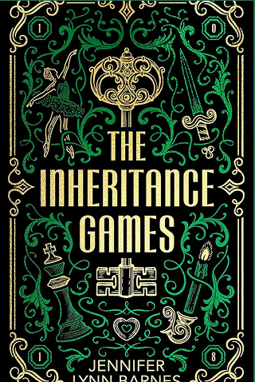
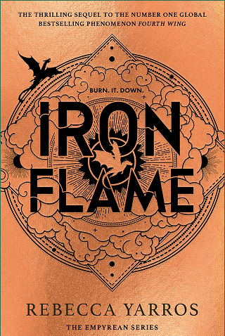
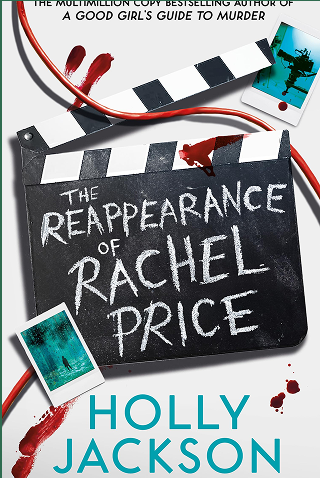
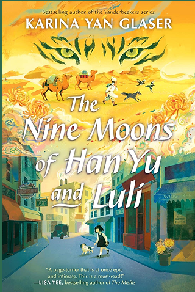
Meet the Family
Creative Bunch
Books written by the family
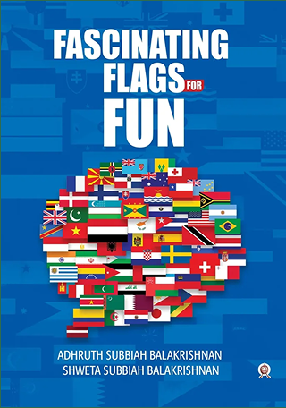
Fascinating Flags for Fun
Adhruth Subbiah Balakrishnan, Shweta Subbiah Balakrishnan
Check it on Amazon →